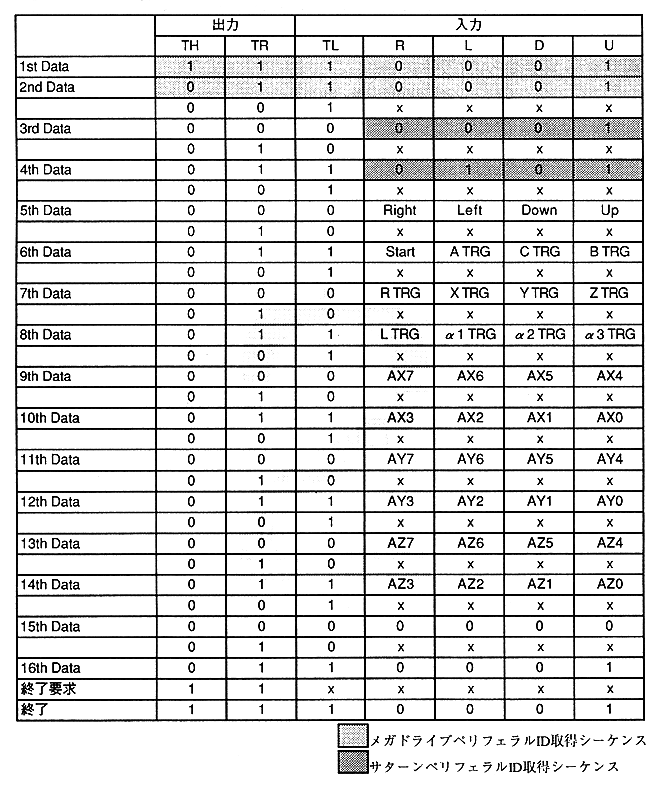

* Right, Left, Down, Up, Start, A TRG, C TRG, B TRG, R TRG, X TRG, Y TRG, Z TRG, L TRG are 0 when the button is pressed.
AX7 to AX0, AY7 to AY0, AZ7 to AZ0 output the absolute value of the A / D converter output without a sign.
AX7 to AX0 and AY7 to AY0 are (0,0) in the upper left and (255,255) in the lower right.
AZ7 to AZ0 are 0 at the bottom and 255 at the top.